Miro
Archivierte Anleitung
Dieser Artikel wurde archiviert, da er - oder Teile daraus - nur noch unter einer älteren Ubuntu-Version nutzbar ist. Diese Anleitung wird vom Wiki-Team weder auf Richtigkeit überprüft noch anderweitig gepflegt. Zusätzlich wurde der Artikel für weitere Änderungen gesperrt.
Anmerkung: Das Programm wird seit 2013 nicht mehr weiter entwickelt.
Zum Verständnis dieses Artikels sind folgende Seiten hilfreich:
Miro  (ehemals DTV oder Democracy Player) ist ein freies und offenes Abspielprogramm für TV-Sendungen, Videocasts, Podcasts und weiteren Video- sowie Audio-Quellen, bei dem die Übertragung via BitTorrent erfolgen kann. So lassen sich über 6000 kostenlose Internet-Shows und Video-Podcasts abonnieren. Besonderer Augenmerk wird auf die Unterstützung von hochauflösenden Videos (HD-Videos) gelegt. Zudem wird eine Vielzahl von Formaten unterstützt und der Player kann auf Videoportale wie YouTube zugreifen.
(ehemals DTV oder Democracy Player) ist ein freies und offenes Abspielprogramm für TV-Sendungen, Videocasts, Podcasts und weiteren Video- sowie Audio-Quellen, bei dem die Übertragung via BitTorrent erfolgen kann. So lassen sich über 6000 kostenlose Internet-Shows und Video-Podcasts abonnieren. Besonderer Augenmerk wird auf die Unterstützung von hochauflösenden Videos (HD-Videos) gelegt. Zudem wird eine Vielzahl von Formaten unterstützt und der Player kann auf Videoportale wie YouTube zugreifen.
Außerdem bietet Miro die Möglichkeit, im eigenen MiroGuide (einem VideoPodcast-Verzeichnis) nach diversen Shows und Themenbereichen zu suchen und Podcasts der eigenen Bibliothek hinzuzufügen. Nach dem Hinzufügen werden neu erschienene Sendungen bzw. Podcasts automatisch heruntergeladen.
Weiterhin macht es Miro einem leicht, Videos an Freunde und Bekannte weiterzuleiten. Durch einen Klick auf "Freigeben" (auf der Internetseite des entsprechenden Videos vom MiroGuide) gibt man die E-Mail-Adresse des Empfängers ein. An dieser Stelle ist es auch möglich, das Video in das eigene Benutzerkonto bei Facebook, Twitter usw. aufzunehmen.
Es handelt sich dabei um ein Open-Source-Projekt der Participatory Culture Foundation  . Diese gemeinnützige Organisation entwickelt und fördert mehrere freie Video-Sharing- und TV-Projekte im Internet, mit dem Ziel, bei dem Massenmedium Internet-TV die Meinungsvielfalt sicherzustellen. Sie entwickelt auch die Videocast-Software Broadcast Machine und die Suchmaschine Videobomb .
. Diese gemeinnützige Organisation entwickelt und fördert mehrere freie Video-Sharing- und TV-Projekte im Internet, mit dem Ziel, bei dem Massenmedium Internet-TV die Meinungsvielfalt sicherzustellen. Sie entwickelt auch die Videocast-Software Broadcast Machine und die Suchmaschine Videobomb .
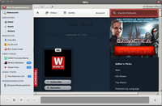
Installation¶
Miro ist bis einschließlich Ubuntu 14.04 in den offiziellen Paketquellen vorhanden. Folgendes Paket muss installiert [1] werden:
miro (universe)
 mit apturl
mit apturl
Paketliste zum Kopieren:
sudo apt-get install miro
sudo aptitude install miro
Zudem empfiehlt sich die Installation der benötigten Codecs.
Um Dateien von Miro-zu-Miro oder zur Miro-iPad-App freigeben zu können, ist außerdem die "Avahi mDNSResponder" Kompatibilitäts-Bibliothek notwendig:
libavahi-compat-libdnssd1
mit apturl
Paketliste zum Kopieren:
sudo apt-get install libavahi-compat-libdnssd1
sudo aptitude install libavahi-compat-libdnssd1
PPA¶
Für Miro existiert ein "Personal Package Archiv (PPA) [2], das für Ubuntu 12.04 eine aktuellere Version als in den offiziellen Paketquellen enthält.
Adresszeile zum Hinzufügen des PPAs:
ppa:pcf/miro-releases
Hinweis!
Zusätzliche Fremdquellen können das System gefährden.
Ein PPA unterstützt nicht zwangsläufig alle Ubuntu-Versionen. Weitere Informationen sind der  PPA-Beschreibung des Eigentümers/Teams pcf zu entnehmen.
PPA-Beschreibung des Eigentümers/Teams pcf zu entnehmen.
Damit Pakete aus dem PPA genutzt werden können, müssen die Paketquellen neu eingelesen werden.
Nach dem Aktualisieren der Paketquellen erfolgt die Installation wie oben angegeben.
Benutzung¶
Beim ersten Start werden zunächst einige Grundeinstellungen abgefragt:
Zu verwendende Sprache
Automatischer Programmstart nach der Anmeldung
Vorhandene Medien der Festplatte in Miro einfügen
Das Programm selbst teilt sich in mehrere Bereiche auf. Links befindet sich Funktionsleiste, die im folgenden noch genauer erläutert wird. Die restliche Arbeitsfläche dient dann zur Darstellung der gewählten Funktion. In den Listenansichten mit der Feed-Auflistung ist es im Allgemeinen möglich, nach "Bezeichnung", "Datum", "Größe" und "Zeit" sortieren zu lassen.
 |
| Komplette Arbeitsfläche |
| 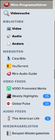 |
| Funktionsleiste |
| 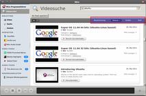 |
| Sortiermöglichkeiten am Beispiel Videosuche |
Programmführer¶
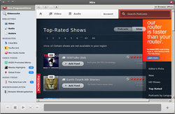 Der Programmführer dient als Übersicht und Filtermöglichkeit von Podcasts. Eine Suche nach Feed-Namen kann über die Suchzeile rechts oben erfolgen. Die Auswahl ist zusätzlich u.a. über Sprache ("Podcasts by language"), Art ("Genre") oder Bestbewertet ("Top Rated") möglich, ebenso nach Video- oder Audioformat. Nach Auswahl eines Filters werden in der Hauptansicht alle Podcasts angezeigt, die dem Filterkriterium entsprechen.
Es ist hier möglich, den ausgesuchten Feed direkt über die Schaltfläche "Add Feed" in die eigene "Feed Liste" hinzuzufügen. Außerdem kann eine Bewertung des Feed durch  auf die Leiste mit den Sternen erfolgen. Je mehr Sterne gewählt werden, desto höher/besser fällt die Bewertung aus.
auf die Leiste mit den Sternen erfolgen. Je mehr Sterne gewählt werden, desto höher/besser fällt die Bewertung aus.
Videosuche¶
Hier können Videos parallel auf mehreren der bekanntesten Videoplattformen gesucht und das Ergebnis angezeigt werden. Es ist anschließend möglich, das Video herunterzuladen und anzusehen. Die Sucheinstellung selbst kann über die Schaltfläche "Als Feed speichern" gespeichert werden.
Bibliothek¶
Hier werden alle lokalen Dateien angezeigt sowie die, die gerade heruntergeladen werden. Die Auswahl nach "Video", "Audio" und "Andere" ist möglich. In "Video" und "Audio" sind alle von Miro erstellten Dateien zu sehen. "Andere" beinhaltet alle importierten Dateien.
Webseiten¶
Über diesem Bereich können Webseiten eingefügt und nach Auswahl im eingebauten Webbrowser angezeigt sowie Videos direkt abgespielt werden.
Über  auf eine Webseite in der Funktionsleiste sind im Kontextmenü die Optionen "URL in Zwischenablage kopieren", "Webseite umbenennen" und "Webseite entfernen" wählbar.
auf eine Webseite in der Funktionsleiste sind im Kontextmenü die Optionen "URL in Zwischenablage kopieren", "Webseite umbenennen" und "Webseite entfernen" wählbar.
Video Feeds¶
| 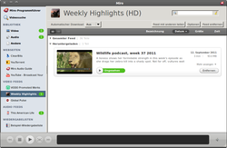 |
| Videofeed-Ansicht |
| 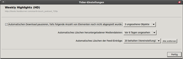 |
| Ticker (=Feed) Einstellungen |
Unter dieser Kategorie sind alle Video-Feeds aufgeführt, die vom Benutzer gespeichert wurden. Nach Auswahl eines Feed werden alle zugehörigen Videos angezeigt. Die Hauptansicht bietet 3 ausklappbare Bereiche an: "Gesamter Feed", "Heruntergeladen" und "(x) laden" (x = Anzahl der gerade herunterladenden Dateien).
Miro aktualisiert beim Start alle Feeds. Für jeden Feed ist getrennt einstellbar, ob neue Videos automatisch heruntergeladen werden sollen. Die Einstellung erfolgt über das Auswahlmenü neben "Automatischer Download". Bei "Feed mit anderen teilen" wird eine Formularwebseite geöffnet, mit dem die Feedadresse per E-Mail verschickt werden kann. Über die Schaltfläche "Optionen" können weitere Einstellungen vorgenommen werden, z.B. das automatische Löschen von bereits gesehenen Videos.
Eine farbig hinterlegte Zahl neben dem Feed-Namen zeigt die Anzahl der Videos, die neu (blau) oder noch ungelesen (grün) sind.
Eine Konvertierung in mehrere Video-/Audioformate ist über Miro ebenfalls möglich. Dazu auf das Video, "Konvertieren zu..." und das gewünschte Ausgabeformat wählen. Über das Kontextmenü kann auch der Ordner mit den fertig konvertierten Dateien geöffnet werden.
Im Kontextmenü eines Video-Feed in der Funktionsleiste über stehen die Optionen "Feed jetzt aktualisieren", "Umbenennen", "URL in Zwischenablage kopieren" und "Entfernen" zur Verfügung.
Audio Feeds¶
Mit den Audio-Feeds verhält es sich genauso wie bei den Video-Feeds mit dem Unterschied, dass nur Audio-Feeds verwaltet werden.
Wiedergabelisten¶
Alle Video-/Audio-Dateien werden in einer erstellten Wiedergabelisten nach hinzugefügter oder nachträglich sortierter Reihenfolge abgespielt. Die Dateien können aus den jeweiligen Feeds bei gedrückter der Wiedergabeliste hinzugefügt werden.
Im Kontextmenü einer Wiedergabeliste befinden sich die Optionen "Wiedergabeliste umbenennen" und "Entfernen".
Globale Einstellungen¶
Die lobalen Einstellungen erreicht man über "Datei" -> "Einstellungen".
| Bereich | Beschreibung | |
| Allgemein | 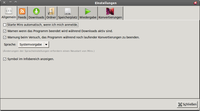 | Miro kann automatisch beim Systemstart gestartet werden oder eine Warnung ausgeben, wenn versucht wird, Miro während eines laufenden Herunterladens oder Konvertierung zu beenden. Weiter kann die Sprache eingestellt werden und ein Symbol in der Infoleiste angezeigt werden. |
| Feed | 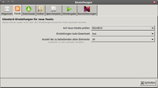 | In diesem Reiter werden "Standard-Einstellungen für neue Feeds" festgelegt, z.B. wie oft ein Feed nach neuen Inhalten überprüft wird oder das automatische Herunterladen einer neuen Video/Audio-Datei. |
| Downloads | 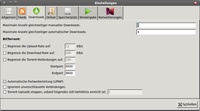 | Einstellungen bezüglich "Downloads" werden hier vorgenommen, wie die Anzahl der gleichzeitig herunterzuladenden Dateien oder eine Begrenzung der Down-/Upload-Geschwindigkeit. |
| Ordner | 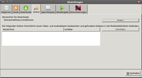 | Der Speicherort für die Video-/Audio-Dateien und von Miro beobachtete Ordner auf der Festplatte festgelegen. Beim Hinzufügen oder Entfernen von Dateien eines beobachteten Ordners wird die Bibliothek automatisch aktualisiert. |
| Speicherplatz | 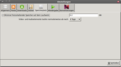 | Hier bestimmt man u.a. den freizuhaltende Speicherplatz. |
| Wiedergabe | 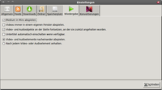 | Alle Einstellungen zur Wiedergabe werden hier vorgenommen, wie "Medium in Miro abspielen", "Videos immer in einem eigenen Fenster abspielen", Wiedergabe an der zuletzt gesehenen Position und das Zuschalten eines Untertitels (wenn vorhanden). Außerdem kann die Wiedergabe entweder nach jedem Video beendet werden oder es werden alle Dateien nacheinander abgespielt. |
| Konvertierung | 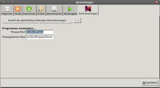 | Hier wird der Pfad des Programms zur Konvertierung von Video/Audio-Dateien festgelegt. Standard ist "/usr/bin/ffmpeg". |
Problembehebung¶
Youtube¶
Zur Zeit ist es nicht möglich, Youtube-Videos herunter zu laden (Stand: 24.11.2014). Um dies zu beheben, muss die Datei /usr/share/pyshared/miro/flashscraper.py  angepasst werden [3][4]. Folgende Zeilen sind zu entfernen:
angepasst werden [3][4]. Folgende Zeilen sind zu entfernen:
url_base = stream_map['url'][0] sig_part = '&signature=' + stream_map['sig'][0] fmt_url_map[fmt] = url_base + sig_part
und durch diese zu ersetzen:
fmt_url_map[fmt] = stream_map['url'][0]
 Übersichtsartikel
Übersichtsartikel- Erstellt mit Inyoka
-
 2004 – 2017 ubuntuusers.de • Einige Rechte vorbehalten
2004 – 2017 ubuntuusers.de • Einige Rechte vorbehalten
Lizenz • Kontakt • Datenschutz • Impressum • Serverstatus -
Serverhousing gespendet von